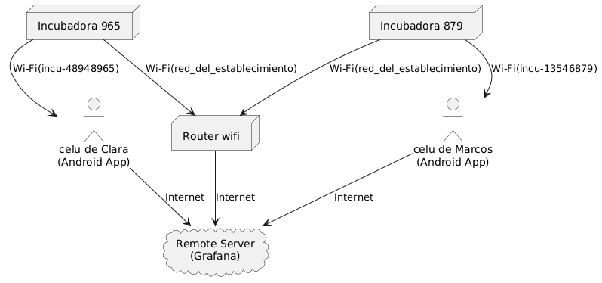

Hardware
La incubadora LibreIncu es el resultado de un cuidadoso proceso de diseño iterativo , buscando crear un dispositivo accesible, eficiente y adaptado a las necesidades específicas de la AFCI. Además, usa componentes disponibles en el mercado y fáciles de reemplazar.
Especificaciones técnicas
- Dimensiones: 100 cm de altura, 50 cm de ancho y 50 cm de profundidad
- Capacidad: 150 huevos en tres bandejas de incubación, con 50 huevos de nacedora
- Sistema de control térmico:
- Resistencia calefactora de 200W ubicada en la base (la misma que una panchera industrial)
- Sensor BME280 para monitoreo preciso de temperatura, humedad y presión
- Ventilador de distribución de aire (modelo Turbina Cooler Extractor Fan)
- Control de temperatura objetivo de promedio 37.8°C
- Sistema de humidificación:
- Microaspersor con sistema de carga automática de agua
- Presión de trabajo de 3 bar
- Bomba de nafta (tipo genérica automotor)
- Control integrado con el sistema de temperatura
- Sistema de rotación:
- Motor de rotación ubicado en la parte superior
- Sistema de cinta de tracción para movimiento de bandejas
- Sensores Reed para detectar posiciones extremas (los de alarma)
- Rotación automática programable
- Control electrónico:
- Microcontrolador ESP32 como cerebro del sistema
- Conectividad WiFi para control remoto
- Aplicación LibrePollo para Android
- Interfaz para visualización de datos históricos en Grafana
El diseño físico incluye un circuito de convección forzada para una distribución uniforme del calor, con el aire caliente generado por la resistencia ascendiendo por detrás de las bandejas, acumulándose en el techo, y siendo forzado hacia abajo por el ventilador por la parte frontal.
En las pruebas realizadas, LibreIncu ha logrado un índice de eclosión del 86%, comparable con las mejores marcas comerciales pero con un costo significativamente menor y adaptada específicamente a las necesidades de pequeños productores.
Software
El ecosistema de software de LibreIncu está diseñado para facilitar el monitoreo remoto y control automático de la incubadora, ofreciendo una interfaz intuitiva y accesible para los usuarios.

Cada incubadora emite una red wifi cuyo nombre empieza con el nombre “incu-” seguida de un número. Un usuario que desee controlar su incubadora se puede conectar a ese wifi. Además cada incubadora se conecta a la red wifi para enviar datos por internet a un servidor.
Firmware de la incubadora
El firmware de la incubadora, alojado en la carpeta /src/embedded del repositorio del proyecto, es el componente de software que corre directamente en el microcontrolador del sistema de control. Está desarrollado para gestionar de forma autónoma el funcionamiento de la incubadora, manteniendo condiciones ambientales óptimas para el desarrollo de los embriones.
El firmware utiliza nodemcu y está escrito en lua, un lenguaje sencillo para propiciar la apropiación del software por parte de las comunidades.